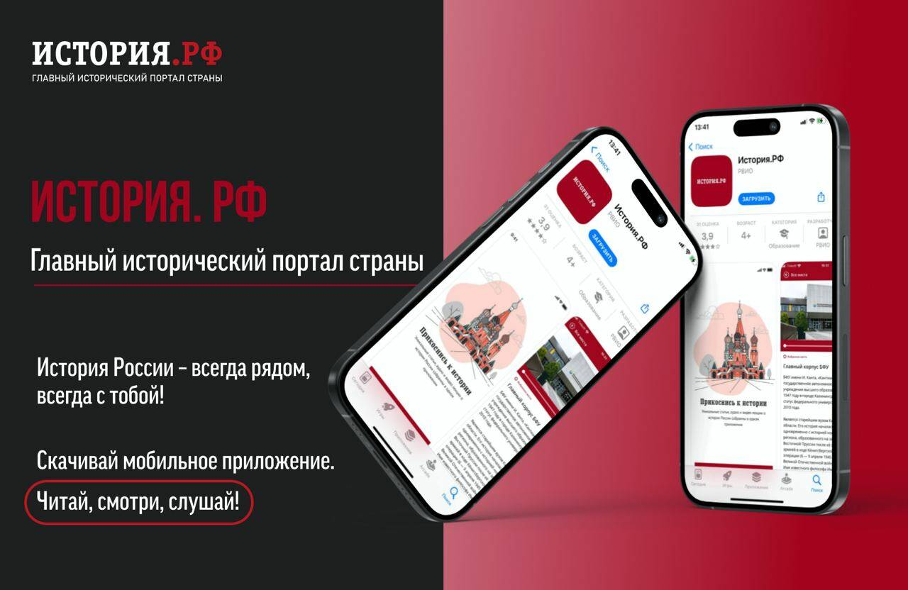

01 / Образование
Учебники и тесты
431 текст
Подготовили тексты для Единых учебников истории на портале история.рф.
Разработали 4 960 вопросов с 4 вариантами ответов и 19 840 пояснениями.
Для приложения «Учебник истории» — 52 теста: 1 040 вопросов и 4 160 пояснений.
